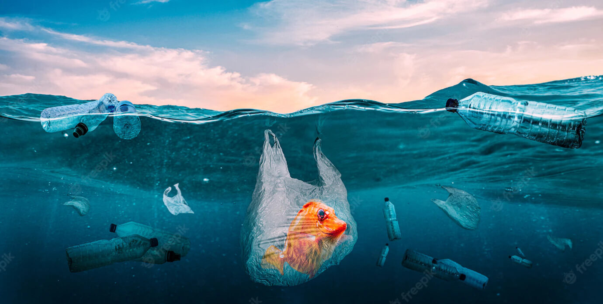
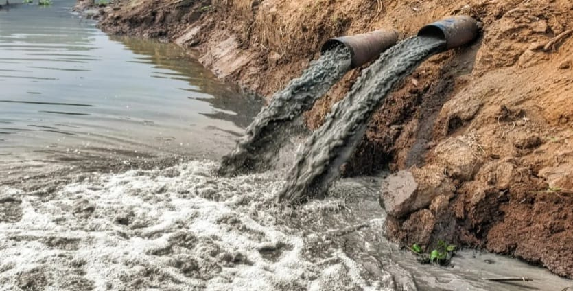
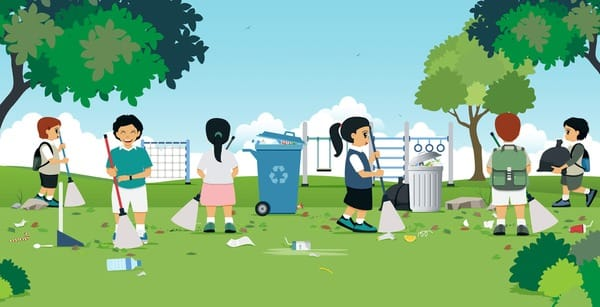

Water Pollution
Water pollution is a critical issue affecting ecosystems and human health across the globe. It occurs when harmful substances such as chemicals, waste products, and microorganisms contaminate water bodies like rivers, lakes, oceans, and groundwater. This contamination can result from various human activities, including industrial processes, agricultural practices, and improper waste disposal. The consequences of water pollution are far-reaching, impacting not only the environment but also economic and social systems. Addressing water pollution requires comprehensive strategies that include prevention, regulation, and community engagement to ensure clean and safe water for all.
Causes
Water pollution is caused by a variety of factors, primarily resulting from human activities. Here are the key causes:
Industrial Discharges
Chemical Waste: Factories and industrial plants often discharge hazardous chemicals and heavy metals into rivers, lakes, and oceans.
Thermal Pollution: Factories use water for cooling and discharge it back at higher temperatures, which can disrupt aquatic ecosystems.
Agricultural Runoff
Pesticides and Fertilizers: Chemicals used in agriculture can wash into waterways during rain, leading to nutrient pollution and harmful algal blooms.
Animal Waste: Runoff from livestock operations can introduce pathogens and excess nutrients into water sources.
Sewage and Wastewater
Untreated Sewage: In many areas, untreated or inadequately treated sewage is released into water bodies, contaminating them with bacteria, viruses, and other pollutants.
Sewage Overflows: Heavy rains can overwhelm sewage systems, leading to spills and contamination.
Plastic and Solid Waste
Littering: Improper disposal of plastic bottles, bags, and other solid waste often ends up in water bodies, contributing to pollution and harming wildlife.
Microplastics: Tiny plastic particles from products like cosmetics and synthetic fabrics can accumulate in water bodies, affecting aquatic organisms.
Oil Spills
Accidental Spills: Oil spills from ships, drilling rigs, and pipelines can cause severe pollution, coating marine life and beaches with toxic substances.
Illegal Dumping: Deliberate dumping of oil and other pollutants into waterways.
Mining Activities
Acid Mine Drainage: Mining operations can expose sulfide minerals, which react with water and oxygen to produce sulfuric acid, contaminating waterways with heavy metals.
Sediment Runoff: Erosion from mining sites can introduce large amounts of sediment into nearby water bodies, impacting aquatic habitats.
Urban Runoff
Pollutants from Roads: Rainwater can wash pollutants like oil, heavy metals, and debris from urban areas into storm drains and subsequently into rivers and lakes.
Construction Sites: Sediments and pollutants from construction activities can runoff into water bodies.
Deforestation and Soil Erosion
Increased Sediment Load: Deforestation and soil erosion can increase sedimentation in water bodies, affecting aquatic life and water quality.
Climate Change
Increased Temperatures: Warmer temperatures can lead to more frequent and severe algal blooms.
Extreme Weather Events: Heavy rainfall and flooding can increase runoff and pollution from various sources.
Waste from Recreational Activities
Boat Waste: Waste from recreational boats and marinas can contribute pollutants to water bodies.
Littering: Trash left behind by beachgoers and hikers can enter waterways.
Prevention
Preventing water pollution involves several key strategies:
Regulatory Measures and Legislation
Enforce Regulations: Implement and enforce laws that limit pollutant discharges from industries and agriculture.
Penalties for Violations: Impose fines and legal consequences for those who fail to comply with water quality standards.
Improved Waste Management
Wastewater Treatment: Upgrade treatment facilities to handle a broader range of contaminants before wastewater enters natural water bodies.
Proper Disposal of Chemicals: Ensure that hazardous substances are disposed of through certified waste management systems to avoid contamination.
Agricultural Practices
Reduce Use of Pesticides and Fertilizers: Adopt integrated pest management (IPM) and use fewer chemicals to minimize runoff.
Buffer Zones: Plant vegetation around water bodies to filter runoff and reduce nutrient pollution.
Industrial Practices
Green Technologies: Use cleaner production technologies that generate less pollution and waste.
Waste Reduction: Implement practices to minimize waste production and increase recycling in industrial processes.
Urban and Construction Management
Stormwater Management: Implement systems like rain gardens and permeable pavements to capture and treat runoff.
Erosion Control: Use silt fences and sediment basins at construction sites to prevent soil erosion and runoff.
Oil Spill Prevention
Safety Regulations: Enforce strict regulations on the handling and transportation of oil and hazardous substances.
Spill Response Plans: Develop and maintain effective plans and resources for rapid response to oil spills.
Public Awareness and Education
Educational Campaigns: Conduct campaigns to inform the public about the sources and impacts of water pollution and how to prevent it.
Community Involvement: Engage local communities in activities like clean-up drives and water conservation efforts.
Conservation Practices
Protect Natural Ecosystems: Preserve wetlands and forests that help filter and clean water naturally.
Sustainable Practices: Promote sustainable land use practices to reduce environmental impact and prevent pollution.
Research and Innovation
Invest in Research: Support research into new technologies and methods for water pollution prevention and treatment.
Innovative Solutions: Develop and implement advanced technologies for filtering pollutants and improving water quality.
International Cooperation
Global Agreements: Participate in international treaties and agreements aimed at reducing global water pollution.
Knowledge Sharing: Share best practices and technologies with other countries to enhance global water pollution prevention efforts.